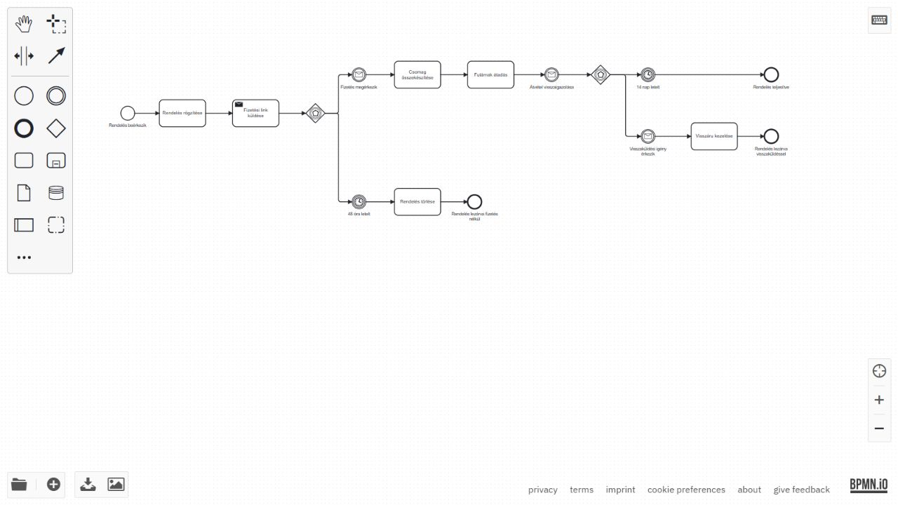

BPA · nap02 · 02 · Mentett, ellenőrzött eredmények (2026-10-05)
Webshop

2. blokk – Webshop
- Rendelés beérkezik → Rendelés rögzítése → Fizetési link küldése.
- Eseményalapú kapu után két fogadó köztes esemény versenyez: Fizetés megérkezik vagy 48 óra letelt. A timer tényleges értéke PT48H.
- Fizetés után Csomag összekészítése → Futárnak átadás. Időtúllépés után Rendelés törlése → Rendelés lezárva fizetés nélkül.
- A bővítésben a futárnak átadás után külön Átvétel visszaigazolása üzenetre várunk.
- Csak a visszaigazolás után indul a második eseményalapú kapu. 14 nap letelt (P14D) → Rendelés teljesítve; Visszaküldési igény érkezik → Visszáru kezelése → Rendelés lezárva visszaküldéssel.
- A kapuk az elsőként bekövetkező eseményt követik; itt nincsenek igen/nem döntési ágak vagy elágazási valószínűségek.
Fájlok: egyszerű modell, bővített modell, ellenőrzött ábra.

Az egyszerű modell az oktatói referencia szerkeszthető másolata; a bővítés külön készített folyamat. A bővítést bpmn.io-ban sikeresen megnyitottuk. Az eredeti tananyag változatlan.